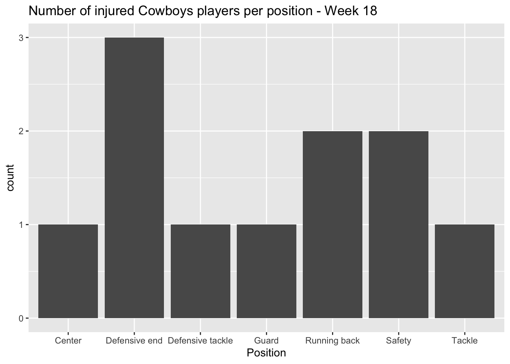
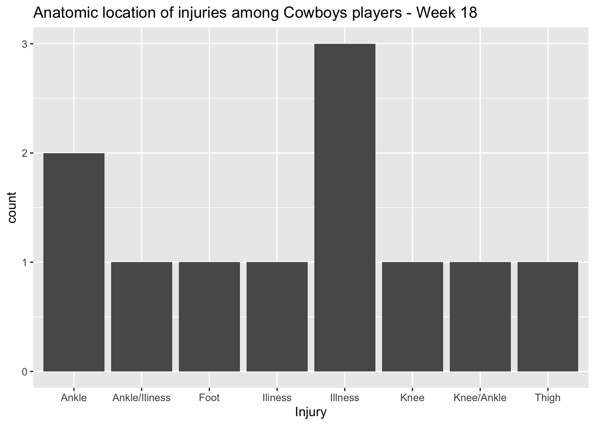
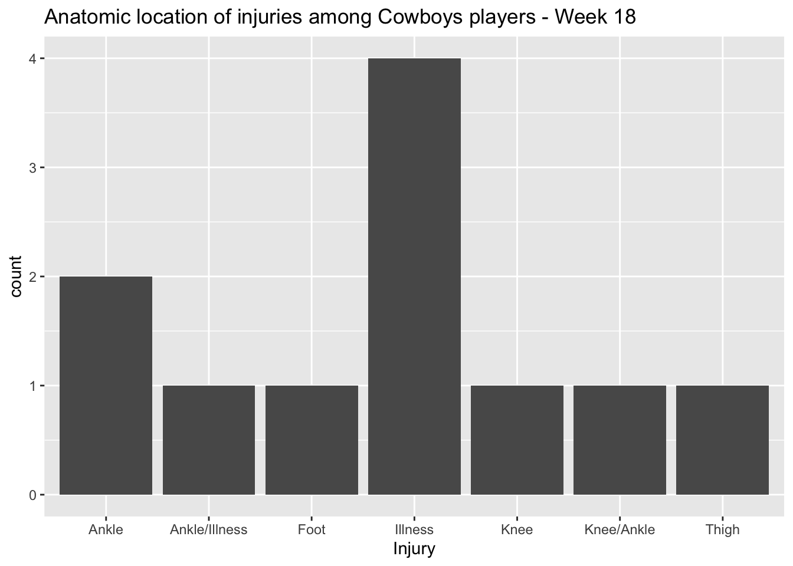

I have needed to copy entire tables from PDFs of publications or from images in order to get the data in a usable format. For example, I may see a table in a paper that I would like to convert to a figure for a presentation. I decided to spend this week’s module trying to find tools that could convert a PDF or image into usable data.
As a learning example, I found a table online showing the Dallas Cowboys’ week 18 injury report. This table was small enough that it felt like a manageable test project, because you can see the effects of each step of processing.
This was also interesting to me personally because throughout the season, it felt like the Cowboys had many players in the same position get hurt. So, I was curious to see if there were multiple players out during the last week of the regular season who played the same position.
Setup
Loading all necessary packages. Tesseract is the package that I’ll use for extracting data from an image.
library(tesseract) #for processing image fileslibrary(tidyverse) #for data processing/cleaning
── Attaching core tidyverse packages ──────────────────────── tidyverse 2.0.0 ──
✔ dplyr 1.1.4 ✔ readr 2.1.5
✔ forcats 1.0.0 ✔ stringr 1.5.1
✔ ggplot2 3.5.1 ✔ tibble 3.2.1
✔ lubridate 1.9.3 ✔ tidyr 1.3.1
✔ purrr 1.0.2
── Conflicts ────────────────────────────────────────── tidyverse_conflicts() ──
✖ dplyr::filter() masks stats::filter()
✖ dplyr::lag() masks stats::lag()
ℹ Use the conflicted package (<http://conflicted.r-lib.org/>) to force all conflicts to become errors
Reading in image
The purpose of this code chunk is to read in the image and get the text into a tibble that can be analyzed.
# In layman's terms, this is telling R that the text it will be extracting is in Englisheng <-tesseract("eng")# Extracting text from the injury report imagetext <- tesseract::ocr("cowboys-w18-injury-report.jpg", engine = eng)# Getting a preview of the datacat(text)
Dallas Cowboys
ruven ____—_—_|inury____|_ PARTICIPATION | PARTICIPATION | aRTiciariON | _ STATUS —_
PLAYER INJURY PARTICIPATION PARTICIPATION PARTICIPATION STATUS
Dorance Armstrong, DE Ankle Limited DNP LIMITED Questionable
Tyler Biadasz, C Iliness _- -_- DNP Questionable
Rico Dowdle, RB Ankle Limited FULL Full ——
Chuma Edoga, T Illness ---- DNP FULL ----
Viliami Fehoko, DE Knee Full Full Full ----
Chauncey Golston, DE Illness —_— DNP DNP Questionable
Johnathan Hankins, DT Knee/Ankle Limited Limited Limited Questionable
Malik Hooker, S Ankle/Iliness DNP DNP Limited Questionable
Hunter Luepke, RB Thigh Full Full Full ----
Tyler Smith, G Foot DNP DNP DNP Questionable
Juanyeh Thomas, S Illness DNP DNP LIMITED Questionable
** The Dallas Cowboys held a walkthrough on Friday. The Friday practice participation is an estimation **
# Converting one large text chunk (character vector of length = 1) to a vector where each line is its own element in the vector (length = 16), using "/n" as the separatorlength(text)
[1] 1
lines <-unlist(strsplit(text, "\n"))length(lines)
[1] 16
# Next I needed to remove lines that didn't have data in them. I will apply my own column headers in the next steplines_reduced <- lines[5:15]# Process the lines vector into a structured tibbletibble_data <- lines_reduced %>%# Convert to a tibbletibble(raw_text = .) %>%# Separate columns into the 8 columns defined below using space as a separatorseparate( raw_text, into =c("First_name", "Last_name", "Position", "Injury", "Wednesday_participation", "Thursday_participation", "Friday_participation", "Game_Status"), sep ="\\s+", fill ="right")%>%# Deleting the comma after each person's last namemutate(Last_name =gsub(",", "", Last_name)) %>%#Expanding position abbreviation to full positionmutate(Position =case_when(Position =="DE"~"Defensive end", Position =="C"~"Center", Position =="RB"~"Running back", Position =="T"~"Tackle", Position =="DT"~"Defensive tackle", Position =="S"~"Safety", Position =="G"~"Guard"))print(tibble_data)
# A tibble: 11 × 8
First_name Last_name Position Injury Wednesday_participation
<chr> <chr> <chr> <chr> <chr>
1 Dorance Armstrong Defensive end Ankle Limited
2 Tyler Biadasz Center Iliness _-
3 Rico Dowdle Running back Ankle Limited
4 Chuma Edoga Tackle Illness ----
5 Viliami Fehoko Defensive end Knee Full
6 Chauncey Golston Defensive end Illness —_—
7 Johnathan Hankins Defensive tackle Knee/Ankle Limited
8 Malik Hooker Safety Ankle/Iliness DNP
9 Hunter Luepke Running back Thigh Full
10 Tyler Smith Guard Foot DNP
11 Juanyeh Thomas Safety Illness DNP
# ℹ 3 more variables: Thursday_participation <chr>, Friday_participation <chr>,
# Game_Status <chr>
Exploratory analyses
Distribution of player position
I wanted to look at the distribution of player position as a table and a bar chart.
# Creating table of player positions among injured Cowboys players in week 18paste("Table of player position")
[1] "Table of player position"
table(tibble_data$Position)
Center Defensive end Defensive tackle Guard
1 3 1 1
Running back Safety Tackle
2 2 1
ggplot(tibble_data, aes(Position)) +geom_bar() +labs(title="Number of injured Cowboys players per position - Week 18")

Three defensive ends were listed on the injury report during Week 18. Two running backs and safetys were injured, as were one center, defensive tackle, guard, and tackle.
Distribution of injury
I also wanted to look at the distribution of injury as a table and a bar chart.
# Creating table of injuries among injured Cowboys players in week 18paste("Table of injury location")
ggplot(tibble_data, aes(Injury)) +geom_bar() +labs(title="Anatomic location of injuries among Cowboys players - Week 18")

After looking at these results, some more data cleaning needs to be done. The function that read the image misinterpretted some lower case l’s as i’s in illness.
tibble_data <- tibble_data %>%mutate(Injury =if_else(Injury =="Ankle/Iliness", "Ankle/Illness", if_else(Injury =="Iliness", "Illness", Injury)))# Creating table of injuries among injured Cowboys players in week 18paste("Table of injury location")
ggplot(tibble_data, aes(Injury)) +geom_bar() +labs(title="Anatomic location of injuries among Cowboys players - Week 18")

Illness was the most common reason for someone to be on the injury list. A total of 5 people had an illness, 4 had an ankle injury, 2 with a knee injury, 1 had a thigh injury, and 1 had a foot injury. Two people had multiple injuries.